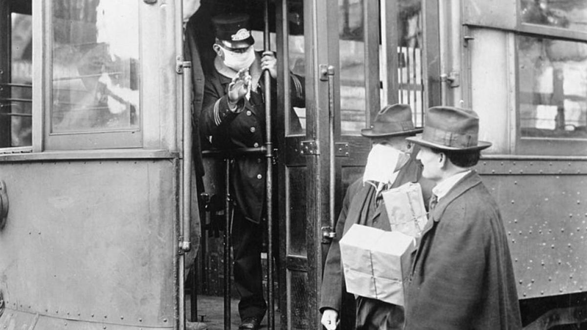
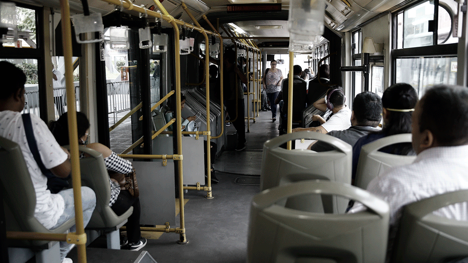

La humanidad está pasando por un momento difícil para todos, pero esta pandemia de COVID-19 no ha sido la única que la humanidad ha sufrido en todos estos años, y siendo realistas en el aspecto de la movilidad a día de hoy una gran sector de la población cuenta con un transporte privado lo cual es un gran apoyo para que no hayan aglomeraciones masivas en los transportes públicos, pero también hay un sector de la población que se transporta en metro, Metrobús y camión colectivo lo cual representa un riesgo para las personas que necesitan transportarse para trabajar.

Cuando sucedió la pandemia de la influenza de 1918 (H1N1) debido a la falta de vacunas y antibióticos para protegerse se limitaron a medidas de sanidad no farmacéuticas como el aislamiento y la cuarentena, en el caso del transporte aéreo con solo 15 años de haberse creado el avión y con la primera guerra mundial a punto de terminar no era una opción muy viable para moverse lo que evitó el contagio por medios aéreos por viajes, sin embargo, el virus se contagiaba por medio de las aves debido a que tenía genes de tipo aviar lo cual se pudo evitar con el aislamiento, y en esos tiempos no era nada común que la gente tuviera autos.
Otra pandemia que afectó al mundo entero fue la de la pandemia de la influenza A (H3N2) que apareció en estados unidos en septiembre de 1968 y mató aproximadamente a 1 millón a nivel mundial, a 100,000 solo en estados unidos, en México esta influenza no golpeó tan fuerte y directo al país, el transporte privado era más común y la Secretaría de Movilidad de la Ciudad de México puso en circulación los “peseros” para prestar servicio sin itinerario fijo en el Distrito Federal y un año después se inició el sistema de transporte colectivo metro pero al parecer la pandemia de 1968 no afectó la movilidad en el país pero si la de otras partes del mundo que tuvieron que detenerse por completo para evitar más muertes como Estados Unidos.

La pandemia de influenza de 1918 fue la pandemia más grave de la historia reciente. Fue causada por el virus H1N1 con genes de origen aviar. Si bien no hay un consenso universal respecto de dónde se originó el virus, se propagó a nivel mundial durante 1918-1919.
Consistía de dos genes de un virus de influenza aviar A, que incluía una nueva hemaglutinina H3, pero que además contenía la neuraminidasa N2 del virus H2N2 de 1957